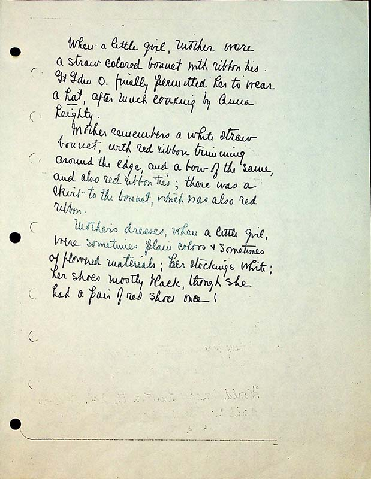

When a little girl, Mother wore a straw colored bonnet with ribbon ties. GrGdm O finally permitted her to wear a hat, after much ???ing{ word begins with “e” or “c” and definitely ends in ‘ing’} by Anna Leighty.
Mother remembers a white straw bonnet, with red ribbon trimming around the edge, and a bow of the same, and also red ribbon ties; there was a skirt to the bonnet, which was has also red ribbon.
Mother’s dresses, when a little girl, were sometimes plain colors & sometimes of flowered materials; her stockings white; her shoes mostly black, though she had a pair of red shoes once!